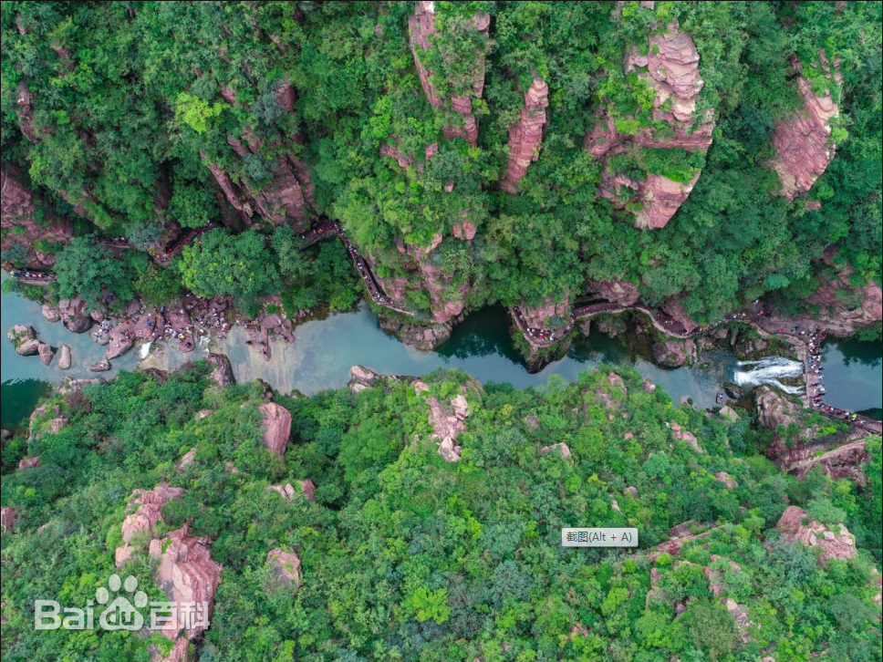
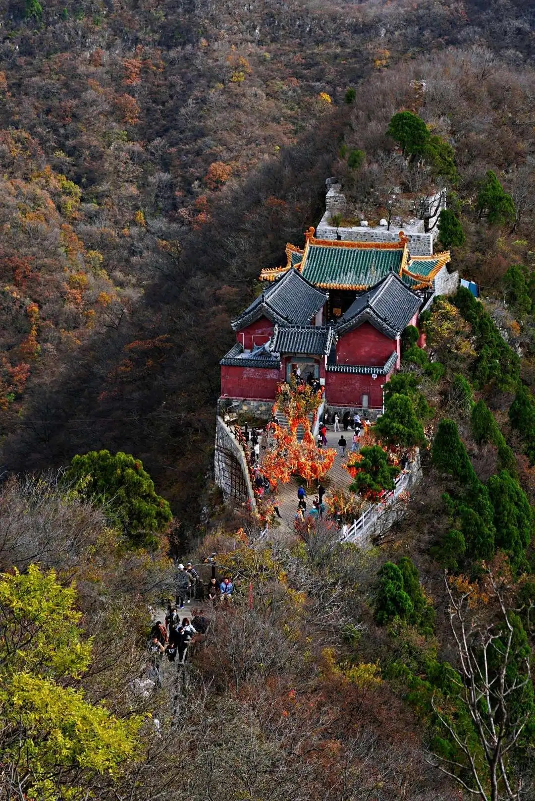
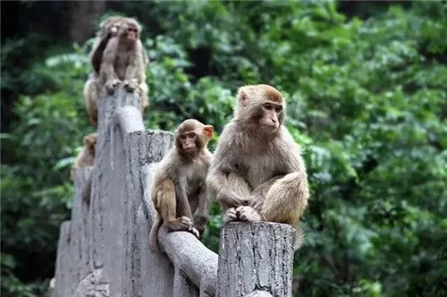
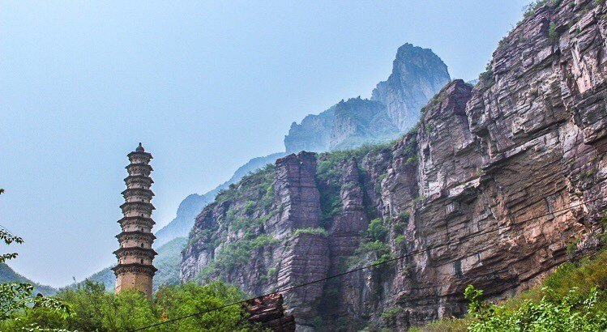

云台山风景区，位于河南省焦作市修武县境内，距离焦作市区30公里，总面积280平方千米，是一处以太行山岳水景为特色，以峡谷类地质地貌景观和历史文化为内涵，集科学价值和美学价值于一身的科普生态旅游景区。
红石峡（又名温盘峪），位于子房湖南，全长2000米，峡谷深藏于地下68米。由红岩构成，属中国丹霞地貌峡谷景观，崖壁呈赤红色，故称“红石峡”。红石峡里分布有“白龙潭”、“黄龙潭”、“青龙潭”、“黑龙潭”、“卧龙潭”、“眠龙潭”、“醒龙潭”、“子龙潭”、“游龙潭”，构成“九龙溪”。还有“幽瀑”、“穿石洞”、“相吻石”、“双狮汲水”、“孔雀开屏”、“棋盘山”等景观。红石峡南端有一狭窄的峡谷称为“一线天”，有瀑高50余米的白龙瀑布。
子房湖：子房湖，又叫“平湖”，因汉代张良（字子房）在此隐居而得名，是云台山风景区东区最大的湖泊水体景观。湖水面积0.5平方千米，全长约4000米，最深处约65多米。湖的北端，有一座山峰酷似大佛。2002年6月，子房湖内首次发现了桃花水母，桃花水母与野马、大熊猫被共同列入国家濒危野生动物红色名录。桃花水母是地球上最原始、最低等的无脊椎动物之一，最早诞生于5.5亿年前。因形状如桃花花瓣而得名，桃花水母对水环境要求极高，桃花水母的发现对景区生态环境保护工作无疑是一个最有力的肯定。
茱萸峰：俗名小北顶，又名覆釜山，因其形貌似一只倒扣的大锅由而得名。海拔1297.6米，峰顶有真武大帝庙、天桥、云梯。唐代诗人王维《九月九日忆山东兄弟》：“独在异乡为异客，每逢佳节倍思亲，遥知兄弟登高处，遍插茱萸少一人。”即于此峰有感而作。峰腰有药王洞，深30米，直径10米，相传是唐代药王孙思邈采药炼丹的地方，药王洞口有古红豆杉一株，高约20米，树干粗达3人合抱，枝繁叶茂，树龄在千年左右。另有“厨灶洞”、“阎王洞”、“黄泥洞”等10余个洞穴。2015年9月20日，玻璃栈道正式对游客开放。
猕猴谷：猕猴谷于1998年8月被国务院批准为国家级狝猴自然保护区，在景区内有数量众多的野生猕猴群落分布，在猕猴谷有猕猴表演。太行狝猴为国家二级保护动物。太行狝猴善于攀缘，喜欢跳跃，行动敏捷，模仿性强，在云台山风景区群居着1000多只太行野生猕猴。景点内有免费狝猴表演，每天6场。
百家岩：百家岩，高170米，东西横跨1千米，是中国山水园林文化从宫廷走向民间的发祥地，汉献帝刘协曾在此避暑纳凉。魏晋时期，史称“竹林七贤”的刘伶、向秀、山涛等七位名士曾隐居百家岩竹林20余年，并先后结识孙登、王烈等隐士，留下了“孙登啸台”、“王烈泉”、“刘伶醒酒台”等遗迹。唐代诗人钱起在此怀念孙登的诗中写道：“崖石乱流处，竹深斜照归。主人卧巨石，自涤清晕。春雷近作解，空谷半芳菲”。主要景点有天门赤壁、二乐台、嵇康似淬剑石、刘伶醒酒台、王烈泉、孙登啸台、汉献帝避暑台、孝女塔等。
